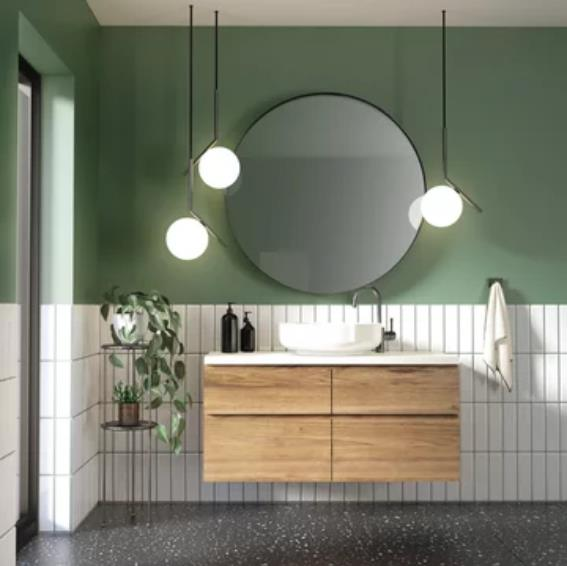

Home
Combos de Baño
Muebles de Baño
Lavamanos
botas
COMBOS DE BAÑO
Fabuloso mueble de baño o aseo con espejo y lavabo cerámico incorporado, de tamaño pequeño, ideal para aseos o baños con poco espacio. Cuenta con un armario de dos puertas, en color blanco brillo, tiradores y patas metálicas. El diseño de este mueble está pensado para la fácil organización de espacios reducidos. Además, la fabricación del mueble es nacional y de melamina de alta calidad. Medidas: 50x80x40cm. Se trata de un mueble de kit de montaje que incluye un manual de instrucciones y tornillería. Grifería y Tuberías NO incluidos.
Conjunto de mueble de baño con lavabo y espejo, con un estilo contemporáneo y elegante. Su acabado en Roble Gris Nebraska, lo hace combinable con cualquier tipo de Baño. Compuesto por un Mueble de una puerta, dos estantes interiores, lavabo en cerámica y espejo. El Mueble esta fabricado en Melamina 16 mm de grosor con guía oculta e interior de madera. Apertura mediante tirador; cómodo y de fácil apertura. Lavamanos de cerámica de alta calidad y espejo luna lisa. El baño soñado a un precio económico.
Mueble de baño con 3 cajones y 4 patas. Los cajones con cierre progresivo mediante sistema “Soft Close” El módulo incluye, en el cajón superior, salva-sifón. Los otros dos con total capacidad, además también incluye el espejo del mismo acabado. El mueble es de color Blanco Brillo, muy combinable con todo tipo de decoración. Su parte inferior con patas de aluminio anodizado con efecto brillo de 12 cm de altura. Este tipo de material tiene una superficie no porosa y muy resistente. Se incluye los dispositivos de fijación del mueble a la pared. (Utilizar los herrajes más adecuados para según el tipo de pared).
MUEBLES DE BAÑO
MUEBLE FABRICADO EN BARCELONA, ESPAÑA - Conjunto de mueble de baño con lavabo y espejo, con un estilo contemporáneo y elegante. Su acabado en Roble Gris, lo hace combinable con cualquier tipo de Baño. Compuesto por un Mueble con patas, que incluye dos puertas y un espejo. El Mueble está fabricado en Melamina 16 mm de grosor con guía oculta e interior de madera. Apertura mediante tirador; cómodo y de fácil apertura. Lavamanos de cerámica de alta calidad y espejo luna lisa. El baño soñado a un precio económico. Mueble disponible en diferentes acabados: Blanco Mate, Ceniza, Nebraska y Nature.

Material: Panel, alta calidad (grado E1), superficie lisa. Una solución que ahorra espacio de almacenamiento y lo ayudará a mantener su baño limpio y ordenado. Fácil de instalar, fácil de limpiar, limpiar con un paño suave y húmedo. Capacidad de carga: hasta 25 kg; tamaño del producto: BHT aprox: 60x60x30cm. El almacén tiene 2 compartimentos para guardar papel higiénico, toallas, detergentes, limpiadores de inodoros y otras cosas pequeñas.
Cotton destaca por su diseño moderno y elegante, podrás combinarlo en cualquier baño; además también incluye el espejo del mismo acabado. (Lavamanos, grifería, sifón y válvula no incluidos). Hecho de aglomerado de alta densidad con acabado de melamina de calidad. Producto Certificado por la PEFC (Asociación Española para la Sostenibilidad Forestal), el mueble es de color Nordik, muy combinable con todo tipo de decoración. Este tipo de material tiene una superficie no porosa y muy resistente. Por lo tanto, es un mueble fácil y rápido de limpiar con un paño húmedo. Requiere montaje
LAVAMANOS
INSTALACIÓN Y DRENAJE CON CONEXIÓN ESTÁNDAR: los accesorios estándar para la instalación y el drenaje le permiten equipar su pila de baño de su elección y así darle su propio estilo. FÁCIL INSTALACIÓN: use este modelo como lavamanos suspendido o como lavabo sobre encimera en una mesa o muebles. ROBUSTO Y RESISTENTE A LOS ARAÑAZOS: la cerámica y el esmalte de alta calidad simplifican la limpieza, el material es particularmente robusto y resistente a los arañazos.
Este producto es sin duda tu mejor aliado si lo que buscas es una fina línea entre precio y calidad El material es utilizado por ingenieros dada su resistencia al rayado, durabilidad y aguante ante choques térmicos. Se trata de un mueble ideal para instalar sin la necesidad de un profesional El color es blanco brillo, fácil de limpiar y mantener gracias a su textura lisa. Lavamanos para instalar en muebles de baño o lavabo.
Además, su superficie satinada aporta un diseño moderno a la par que elegante. Hecho de cerámica, este lavabo de baño será un aporte elegante y atemporal para cualquier baño, aseo, vestuario o tocador. Hecho de cerámica, el lavabo es considerablemente fácil de limpiar. El lavamanos no solo sirve como recipiente para el uso diario, sino también como adorno para su hogar. También cuenta con un rebosadero para drenar agua cuando se llene demasiado